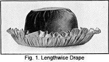

1928—The New-Way Course in Millinery and Hat Design
Lesson 10—Covering Brims—Linings
The Brim of the Hat
When you know how to make frames for crowns and how to cover crowns, you know one-half of the most important part of millinery. Now it remains to complete the second half, and to learn how to cover and finish the brim of the hat.
It is the brim that most often determines the style of the hat, and the crown that carries out and emphasizes that style idea. You realize, therefore, that the brim requires as much care and consideration in its construction as the crown. Indeed, there are many ways to drape a brim which not only indicate the style note, but enhance and beautify the hat.
On the plain sailor hat, the plain stretched covering is used. It is simple, because the hat it covers, is simple. An elaborately draped and covered brim on a plain sailor shape would be inappropriate and unattractive. But, if the severe brim is unbecoming, a soft drape may be used for the crown. Thus the lines of the hat are softened, and the whole effect made more becoming. However, it is always best to avoid the straight brim if it does not harmonize with the lines of the face.
One type of drape very frequently used on brims is called the Lengthwise Drape. It may be as full as desired, and may finish the brim with or without an extension.
The Lengthwise Drape
If velvet is used when making the lengthwise drape, it should be on the bias. But if the material used is extremely sheer, such as georgette crepe, net or lace, it should be used on the straight. This crosswise drape is most often used on up-turned brims. In this case the upper side of the brim is covered with plain material find the lengthwise drape is used as a facing on the under side of the brim. To make the lengthwise drape, follow these steps.
1. Cut your material two inches wider than the brim and twice the length of the outer edge of the brim.
2. Join the pieces together with a plain seam.
3. Now divide the drape into eight sections. Make a one-inch underturning on one edge and gather near the raw edge of the material. This will make a tuck about three-quarters of an inch wide.
4. Proceed to divide the brim of the hat into eight sections and mark the points distinctly. Begin the division of the brim at the center front when marking the eight principal points of the brim.
5. The drape should now be pinned to the edge of the brim, the shirring line meeting exactly the edge of the brim. The marks on the brim and the marks on the drape should correspond.
6. Sew together, using small back stitch.
7. Draw the fullness into the headsize and baste. Be sure that this fullness is so drawn in that the lines are straight and even from the headsize to the edge.
If you use the lengthwise drape without an extension, cut your sections allowing exactly the same fullness, but do not allow for the tuck at the edge.
The Shirred Drape
There are several variations of the lengthwise drape, but most important among them is the shirred drape. It can be made with plain shirrings, one inch apart, or with tucks stitched in one inch apart with cords running through them on which to draw up the fullness Both are attractive, and the type used depends largely upon material and style.
If you intend using cords, decide first how many of them you want to use. Then cut your drape in the same manner as the lengthwise drape is cut, allowing for the tucks. Place one cording exactly at the edge of the brim, and the others spaced equally between the edge and the headsize. First pin and then sew firmly to the brim, and then match the eight points on drape and brim. The fullness must be even and straight. To finish, draw the fullness into the headsize and baste in place. Finish the edge with a bias binding.
The whole beauty of the shirred drape depends upon artistic and attractive arrangement of the fullness The shirred drape is very similar to the corded drape and is handled in the same manner, but the fullness in the shirred drape is drawn up on threads instead of on a cording. For this reason, it is more difficult to arrange the shirred drape attractively. Practice until you achieve a just-right effect.
The Crosswise Drape
To give a hat an attractive, soft finish, the crosswise drape is frequently used. It has no definite style, but may be varied in many ways. The crosswise drape sometimes serves the purpose of brim covering and trimming in one. It is made in this manner:
1. First cut the drape the length of the outside edge of the brim, and at least one-and-a-half times its width. If the material is very fine and soft, like georgette, it may be advisable to use as much as three times its width. You must use your own judgment in this matter, and make the width of the drape correct according to the style of the hat and the material used.
2. Now pin the drape to the brim, arranging the fullness in graceful lines. Sew in place, using stab stitches.
3. One variation of the crosswise drape is to have several rows of cording or shirring at the center front, and the remaining part of the drape tacked to the frame loosely, so that it falls in soft folds. Never use a great deal of sewing on a drape of this kind as it will be held too stiffly. Just use enough stitching to keep the material in place. If tucks or cords are used, allowance for them should be made when the material is cut for the drape.
There will be extra fullness at the headsize. This should be laid in plaits and sewed neatly in place. The plaits should be evenly placed at intervals around the headsize.
The Over Drape
When a drape is so arranged that it begins at the headsize on one side of the brim, is brought over the edge of the brim to the headsize on the reverse side in one continuous piece, it is called the over drape. You should have no trouble in identifying this drape whenever you see it, as its name explains it.
1. Always cut the material for the over drape on the bias. It should be as long, as the outside edge of the brim, and twice as wide as the brim. If there is to be an extension at the edge of the brim, be sure to allow for it when cutting the drape.
2. An extension, if you are going to have one at the edge of the brim, would be simply in the form of a tuck. The stitching would come exactly at the edge of the brim.
3. Sew the extension in place, and then drape the remaining material toward the headsize in even, graceful fullness Sew in place.
4. Repeat on the under side of the brim.
Covering a Flat Brim
I am sure that you will want to learn to cover a flat or slightly drooping brim. Let us suppose we are to use black velvet for the covering. You have already made your buckram frame, wired it at the edge and covered the wire with bias stretched crinoline as directed in an earlier lesson. Mark the center front and back of brim and place your velvet on the top of the brim with the warp thread running from front to back.
 Now begin to pin at the front edge of the brim, then place a few pins at
the back and then at each side. Stretch the velvet tightly over the brim
and pin as shown in Fig. 5. After this has been done the material must be
cut away from the edge, leave at least three-quarters of an inch. Cut a piece
from the center of the brim, leaving about one inch to extend around the
head-size. Slash the headsize the same as the buckram
frame, usually about one inch apart.
Now begin to pin at the front edge of the brim, then place a few pins at
the back and then at each side. Stretch the velvet tightly over the brim
and pin as shown in Fig. 5. After this has been done the material must be
cut away from the edge, leave at least three-quarters of an inch. Cut a piece
from the center of the brim, leaving about one inch to extend around the
head-size. Slash the headsize the same as the buckram
frame, usually about one inch apart.
Pin around the headsize and sew with the stab stitch, re-pin the edge of the brim to remove any fullness Now to sew the velvet to the brim, hold the brim very carefully between the fingers and thumb of the left hand and remove the pins as you sew. The velvet may be turned to the wrong side of the brim, or the underside, and caught down with the catch stitch or the hemming stitch may be used.
The lower part of the brim is covered in the same way, but the outside edge must be finished so that it will look very neat. Trim the under facing to about one-half inch from the edge of the brim. It may be turned to the inside and slip stitched or overhanded to the upper part, or one of the very best ways of finishing the edge of a plain covered hat is to sew in a piece of frame wire, or cable wire, if you desire. This will give a cord effect when finished. Place the wire around the edge of the brim and cover it with the velvet. Slip the cut edge of the velvet inside between the covering and sew the wire in place by taking a stitch about one-quarter inch long under the wire and pass the needle up between the brim and facing. Do not join the wire until almost around to that point. A milliner's clasp may be used, or it may be carefully overhanded to the edge of the material and then covered and finished as mentioned.
Brim of Hat Finished with Bias Fold
Determining Width
It is a little hard to determine the exact width of a fold to be placed on the edge of a brim. Of course, some materials such as chiffon, georgette crepe and organdie stretch a great deal. For these materials it is suggested that you stretch a few inches of material over the brim, so that you can approximate the amount that it will stretch. However, it is considered safe to estimate twice the desired width of the fold when finished, plus 1 1/2 inches for making. The 1 inch is allowed for turnings and the 1/2 inch for stretching.
Placing Fold on Edge of Brim
If you are making a velvet fold which is to extend one inch on each side of the brim, cut a piece of material 3 1/2 inches wide. Fold this strip of material through the center and place it over the edge of the brim. Stick a pin through both fold and brim. Stretch the material through the center of the fold until all fullness is out of the inner edge. Pin ends together at joinings. Allow quarter-inch seams. Remove the bias material from the brim and stretch the joining and press or steam open as directed.
Now you are ready to replace this bias fold and in so doing be sure to place the seam at the back or side back. In case there are two seams place them at the sides. Begin at the seam or one of the seams and pin in place as directed. Care must be taken that the fold isn't too tight or the brim will be drawn out of shape, but if the fold is too loose the finish will not be at all attractive.
Now turn about one-half inch of the material over a cord or wire and sew it to the brim by means of the slip stitch. This makes a very neat finish and is called tooling the edge. This is accomplished by placing the forefinger on the wire and pressing down. Take a stitch into the frame, forcing needle out under the wire or cord. With the needle tuck the material gently under the wire. Take a stitch about one-eighth or one-quarter inch long under the wire. Draw thread tight to hold the material under the wire.
Finish at Edge Without Wire
To finish the edge of the brim without a wire proceed to join the pieces as previously mentioned. Make a half-inch turning on both sides of the fold and pin it in place. The fold is slip stitched to the brim. Take a stitch under the fold near the edge; the next stitch is taken directly opposite into material on the brim. This is repeated, causing the length of the stitch to alternate first into the fold and then into the brim.
Cording
Sometimes the edges of a brim are finished by means of cording. For this purpose yarn may be used, a candlemaking or regular cord purchased for the purpose. For covering the cord follow the directions given below.
1. Make a bias strip wide enough to cover the cord, allowing enough for the seam.
2. Fold this strip through the center with the wrong side out.
3. Stitch far enough from the turned edge to make a casing large enough to draw the cord through. Attach the cord to the bodkin, that is, cut away a few strands at the end of the cord to bring it to a point, sew this end of the cord firmly to a round bodkin, wrapping the cord where it is attached to the bodkin. Be very careful not to bunch the cord, and you will find that it draws through the material very easily.
4. Insert the point of the bodkin in the casing made for the cord, allowing one-third of its length to extend outside the casing.
5. Now sew the end of the bias casing firmly to the cord where it is attached to the bodkin.
6. Draw the bodkin through the casing made for the cord. This turns the covering right side out over the cord.
Another method is to measure two times the length of the bias strip plus a couple inches more. Begin at one end and fold bias material over cord having the right side of the material in the inside. Baste and sew by hand or machine. Care must be taken that the stitching isn't done too near the cord or it will be impossible to pull it through. Secure the end of bias strip to the middle of the cord. This may be done by stitching down the end. Now begin at the end of casing and gradually pull it over the uncovered cord similar to the way the casing of an umbrella is drawn off. Cut off the uncovered cord.
Importance of the Eight Points in Brim Draping
In hat-making, the eight points of both brim and crown are extremely important. The principal points of both crown and brim are the center front, the center back, and the points halfway between them. The other four points are located halfway between the side points. Always mark these eight points carefully before proceeding with the covering of a brim or crown.
Similarly, when crown and brim are joined, these eight points must meet. Also, when draping the crown and brim, it is necessary that these points be matched on the frame and covering so that the grain of the material will run in the right direction.
In trimming, the eight points of the hat are also very important. This subject will be covered exhaustively in a later lesson which teaches the design, or art, of millinery. For the present, bear strongly in mind that the eight points of the hat are important and must be carefully found and marked when the hat is being made.
Incidentally, when the paper is folded to obtain the first circle pattern, the lines where this paper is folded correspond exactly with the eight points of the hat.
Covering Brims with Braid
You might be quite clever in the matter of covering a brim with silk or cloth, but unless you know how to handle straws and braids as deftly, you will not be quite ready to undertake a hat of this type. Quite as much care must be taken with the braid brim as with the silk or cloth brim. Indeed, unless the braid is correctly applied the hat will not be a success.
If you are planning to cover your hat with any of the rough or fancy straws, with hemp, tagel or similar straws, be sure to select a wire frame. And be sure that the frame is first covered with mull, silk or crinoline. If a willow shape is available, it is preferable to the wire frame as it is considerably lighter and hence easier to work on.
Fig. 6 will help you to understand how the braid is applied to the brim of a hat. If the hat has an irregular brim the braid will have to be cut instead of covering it with a long piece. It may be necessary to lap the braid a little more in some places than in others. However, avoid lapping it too much as it will waste the material and make the hat very heavy.
Fig. 7 shows the applying of braid to a wire frame—the idea being to remove the braid after it is stiffened by means of shellac. Of course, the braid may be sewed through the wires if you desire, but in this case the frame should be covered with crinoline to keep the wire from injuring the braid and the wire will form the foundation and the braid will not need to be stiffened, and therefore will not be removed from the frame. It is just a matter which you must always decide for yourself, whether or not you want a stiff brim or one a little more pliable.
When applying braid or straw to a hat, either to the crown or the brim, be sure that it is neither too tight nor too loose, otherwise it will not lie flat and smooth. The whole beauty of the work depends upon the success with which the straw is manipulated. Begin at one side of the brim, either the right or the left, at the center back and sew from right to left. Make large stitches on the wrong side and small stitches on the right side. The braid should be allowed to project over the outer edge about one-quarter of an inch.
When using narrow braid, cross the second strand over the end of the first when you work around to it, so that it is bound down neatly. This second row of braid should lap over the first only enough to permit of fastening the outer edge of the second to the inner edge of the first row. For this reason, the inner edge of the straw should be drawn in so that it lies flat against the frame and does not ruffle away from it. Similarly, each row should be stretched a little at the outer edge to take out as much fullness as possible at the inner edge.
When the headsize is reached, cut the end of the braid or straw on the bias and let it overlap the row before it, to achieve a neat, inconspicuous finish. Be sure that you stretch the straw as you approach the headsize so that it will fit the sharper curves.
Covering the Brim with Horse-hair Braid
Stiff braids or straws, such as horse-hair, require wire foundations such as are used for maline and net hats. The headsize wire is covered with maline, the edge wire is similarly covered, and then the whole brim is covered with maline also.
Horse-hair braid is sometimes as much as two inches wide. Very fine silk thread should be used in applying it and the stitches should not be more than one-quarter of an inch long. The back-stitch should be used, and the needle should catch only one hair of the braid on the right side.
In applying the horse-hair braid to the brim, extend the first row over the edge wire almost the full width of the braid. You will find that this gives a soft, attractive edge. The second row of braid should overlap the first just a trifle. To make the ensuing rows of braid lie flat on the brim, the coarse thread woven through the inner edge of the braid may be drawn up as much as necessary. Horse-hair braid must be cut off neatly and turned under at each row.
Sports hats and dressy hats when made of narrow ribbon are covered exactly as braid hats are covered. The ribbon is treated as though it were a braid. The whole secret of success with ribbon hats is neat workmanship and a regard for a well-finished appearance.
The Tricorne
There are, of course, various types of brims—all of which you will no doubt encounter in your experience as an expert milliner. Most of them you will be able to handle expertly once you master the method of covering one frame correctly. But there are some unusual types of frames, with which you may have difficulty—most familiar among them being the tricorne. It is an exceptionally good frame for the tailored hat, or the hat intended for street wear. It may be made of velvet, satin or straw.
When applying braid to the brim of the tricorne, always begin at the upper edge. The braid should extend about one-quarter of an inch from this edge. Do not cover each part of the brim separately, but go around the brim as though it were in one part. When you come to corners that are difficult to turn, and you find that the braid ruffles a bit, draw the string in the top of the braid until the braid lies flat against the frame. See that each row overlaps the one before it about an eighth of an inch, and finish underneath the brim about a half inch inside the point where the facing will begin—or where the lining will be applied.
Hats that boast slashed brims are not any more difficult to cover than ordinary brims. Just cover each part separately and when you approach the headsize, where the brim becomes one again, go around the hat.
Never forget that careful workmanship is the final test of success in millinery—as in everything else.
Linings
Most beginners in millinery have the mistaken idea that the lining is unimportant—that any material may be used for the lining and it may be applied in any way. Just as a slovenly, untidy lining in a dress or cape indicates that a dressmaker is a careless, amateurish worker, so does the incorrect lining in a hat indicate poor workmanship. A building cannot stand on a poor foundation; a well-made, attractive hat cannot appear to its best advantage if the lining does not fit properly or is incorrectly applied.
Although many milliners contend that the lining should be put in the hat before the trimming is applied, varied experiences prove that the best time to put it in is after the entire hat is completed. If the work is done carefully, it will not disturb the flowers or bows.
In an earlier lesson the various materials for linings were given. If you have forgotten, refer to this lesson and study the different materials until you are positive that you will not have to refer to the lesson again. Always remember that the fabric used for the lining depends upon the style and material of the hat. For transparent hats, the same material is used for the lining or something just as thin. The most conventional lining is that of light, soft silk, although mercerized cotton fabrics are often used for heavier hats.
Making the Lining
Lining that is cut lengthwise will not ravel easily. However it may be cut on the bias, or crosswise, if so desired. There are several different methods of cutting and applying linings and we will give all the best methods in this lesson. The method used depends entirely upon yourself—the one you find most convenient and practical being the logical choice.
French Lining
One type of lining is called the French lining. It is not used very extensively but is useful when the headsize is too large and must be reduced. Follow these step-by-step directions and you will find that making the French lining is quite a simple matter:
1. Cut a brace wire in such manner that it will lap one inch and fit exactly within the headsize. Lap this wire and tie with tie wire.
2. Proceed to measure the crown from front to back and from side to side, using a tape line flat against the inside of the crown. Take this measurement to correspond with the brace wires which form the crown. Pass from the headsize across the top of the crown, to the headsize at the other side. Add an inch to this measurement. Measure from front to back in the same way adding one inch to these measures.
3. Now cut an oval of silk. Use the two measurements you have just taken for the cross and lengthwise diameters.
4. Turn the edge of the silk over the wire you have prepared and gather on this wire with a fine running stitch. This brings the gathers at the headsize when the lining is sewed in the hat.
5. The lining should now be slip-stitched to the headsize of the hat.
The Plain Lining
The lining which is most commonly used in millinery is just as simple as the one you have just made. Be sure, though, in making and applying linings that they are high enough in the hat so that they do not show when the hat is worn. The plain lining used in millinery is made in this manner:
1. Cut a square of the silk, or whatever material you are using for the lining, large enough to cover the greater part of the top of the crown. (Usually four inches square.)
2. Baste this to crinoline and proceed to baste the covered crinoline to the inside of the crown. Take a long stitch on the inside and a short one on the top of the crown. This is called the tip of the lining (crown tip) and it is on this that the name of the milliner is sewed. The center of the square should be at the center of the crown.
3. Cut a bias strip of material, the length of the headsize plus one inch for seams. Make it as wide as the crown is high plus 2 1/2 inches.
4. Join the ends of this bias strip, employing a seam on the wrong side. This seam should be at the back of the hat when the strip is applied.
5. Now make a half-inch underturning on one side of the lining and stitch about one-quarter inch from the edge. This makes a neat casing for a ribbon.
6. If the lining is to be slip-stitched to the hat, make an under- turning at the lower edge and baste.
7. With the seam at the center back, place the wrong side of the lining against the inside of the crown. Pin the lining in place and slip-stitch to the hat. Or, you may omit this last underturning and simply pin the lining in place with the right side of the lining against the headsize, the large part of the lining extending outward. Sew in place using the buttonhole stitch. Turn the lining up into position. Do not use the overcast stitch when applying linings as this stitch is liable to show when the lining is turned up inside the crown.
8. To finish this lining, run a ribbon through the casing at the top. Draw as much as necessary, to fit the head snugly and comfortably, and tie in a neat bow. Sometimes milliners finish their hat linings with tiny hand-made flowers. This lining is suitable for use in summer hats of straw braid.
The Tailored Lining
The lining is the final test of workmanship. The professional milliner pays as much attention to the lining as she does to the drape of the material, the angle at which the trimming is applied. Some milliners prefer the tailored lining because it is so neat, so excellent a piece of good workmanship when well-made. The tailored lining may be of black silk or black mercerized cotton, but harmonizing and matching colors are also used to a great extent.
The tailored lining is used more extensively than others at the present time. Sometimes it is made of two contrasting colors of silk, the crown tip being of one of the colors used on the hat and the rest of the lining being the same color as the hat. But most often one color is used.
1. First cut a circle of silk for the lining crown tip. It may be large or small, as preferred.
2. Cut a bias strip of silk long enough to reach from the head- size to the circle, adding one inch for seam allowances.
3. Join the ends with a plain seam.
4. Now make an underturning at the top of the lining and stitch to form a casing for a cord.
5. Proceed to draw in the cord and draw the lining into fullness until it just fits the outer edge of the circle.
6. Pin in place and sew along the stitching of the cord, using a fine back stitch.
7. Make a half-inch underturning at the lower edge and pin into place in the hat, being sure that the seam is at the center back of the crown.
8. Slip-stitch neatly and carefully to the headsize.
You will find that this makes an attractive lining, and gives the inside of the hat a smart, well-finished appearance. Always experiment with the fullness of the lining until you find exactly that point where the hat fits the head snugly and comfortably. Then proceed with the finishing stitches.
But perhaps you find that your hat is too large, or too small, and that not even the fullness or scantiness of the lining can alter the fit of the hat sufficiently. In this case it becomes necessary to use a bandeau.
The Use of Bandeaux in Millinery
The bandeau is simply a band or fillet around the headsize of a hat to reduce or increase its size. The word has its origin from the French word which means "little band" and originally meant the band around a man's cap.
Bandeaux are made on buckram foundations. Anything less firm and stiff than buckram is unsatisfactory. The buckram is wired all around to give it strength and resistance. When used to reduce the headsize, it is merely a round piece which is called a halo. It is made just as wide as is necessary.
Usually the sides of the halo bandeau are slanting so that the hat will fit more firmly. The sloping effect can be accomplished by cutting the buckram from its outer circle almost through to the inner one and overlapping to obtain the required slant. Or a paper pattern may first be used to obtain the right slant, and then the paper halo used as a pattern for the one made of buckram.
The buckram halo bandeau is used only when the hat is very large—so large that the head reaches clear through to the crown top of the hat. If the headsize is only slightly too large, soft bandeaux may very successfully be used. This is made of a very narrow strip of lining that just fits the headsize. One edge is finished with a narrow hem through which a ribbon is run, the other edge is sewed to the headsize of the hat. This lining is then drawn up on the ribbon until the hat stays in the proper position.
To increase the size of a hat, or to tilt it at an angle no; obtainable in any other way, buckram is also used. And as before, the edges are wired. In this case, the bandeau is put on either side, or at the front or back. This raises the hat from the head, and if the bandeau is correctly fitted to the headsize, the hat will feel comfortable. A trimming of flowers or ribbon usually conceals the bandeau.
You must practice and experiment with too-small and too-large frames until you are able to apply bandeaux correctly. The mere reading of this lesson cannot help unless you actually do the work. Look at hats in which bandeaux have been used, see how it is done, and then practice on your own frames.
Do not leave this lesson until you have so thoroughly mastered linings that you will be able to apply one in any hat quickly and without the least hesitancy. If you do not do it now, you will have to refer to this lesson later, when you are making pretty hats for yourself and for others.
LESSON 10
QUESTIONS
1. Is the covering of a hat ever stretched?
2. What is the over drape?
3. What are the principle points in both crown and brim?
4. If the braid is applied to the hat too tight or too loose what will happen?
5. How much should the braid overlap?
6. Name the three kinds of linings.
7. Which lining is most commonly used?
8. What is a bandeau?